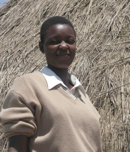
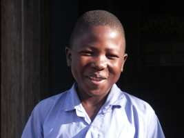

November 2005
Bram Moolenaar, penningmeester van ICCF Holland, bezocht het Kibaale Children's Centre in oktober-november 2005. Dit is zijn verslag.
Ik heb tijdens mijn bezoek veel foto's gemaakt.
Klik op de plaatjes hieronder om een grotere versie te zien.
Meer foto's zijn hier te vinden.

Nieuwe klaslokalen

Molly heeft S4 afgemaakt en hoopt volgend jaar naar een andere school te
kunnen gaan.
|
|
|
Voortgang en complicaties
In de voorgaande jaren heeft Uganda een economische groei gehad van ongeveer
5% per jaar. Dat is op straat goed te merken: Er rijden meer auto's rond,
ik zie nieuwe winkels, mensen zijn beter gekleed. Kibaale heeft nu een echt
benzine station! Het wordt met de hand bediend want er is nog steeds geen
elektriciteit in Kibaale, maar het werkt. Nu hoeven we niet meer naar Rakai
te rijden voor benzine of diesel.
Het Kibaale Childrens Centre is weer een beetje gegroeid. Er is een nieuw
gebouw met klaslokalen en een grote regenwater tank bij de lagere school is
bijna klaar. Dit zal de kinderen van schoon water voorzien. Water is altijd
al een probleem geweest in deze omgeving. Vorig jaar werd de pomp nog
voorzien van een filter om de water kwaliteit te verbeteren. Die werkt nog
steeds, maar de hoeveelheid water is niet genoeg voor de 700 kinderen van de
school.
Vorig jaar hebben een tiental kinderen die via ICCF Holland gesponsord worden
de middelbare school afgemaakt en zijn verder gaan leren in een vervolg
opleiding of een vakschool. Dit betekent dat deze kinderen hun simpele huis
in Kibaale moesten verlaten en in de grote stad een onderkomen hebben moeten
vinden. Wij moeten dan betalen voor hun onderkomen, eten, opleiding, boeken,
enz.. Dat kost nogal wat. En aangezien ze ver van Kibaale op diverse
plaatsen studeren is het lastig om ze in de gaten te houden.
Het kantoor op het project worstelt hier momenteel mee. Veel van de problemen
kunnen worden opgelost met geld, maar we moeten er wel voor zorgen dat het
voor het juiste doel gebruikt wordt. We hebben gevallen gezien van een school
waar geld "verdwijnt" en een leerling die papieren vervalste. We moeten de
verzoeken om geld goed doorlichten, dat kost tijd en moeite. Ik hoop dat de
eerlijke kinderen hier niet onder zullen lijden.
Ik heb Namate Rose geinterviewd. Ze heeft eerst de school op het project
gedaan, vervolgens in Masaka op de middelbare school gezeten en heeft nu de
universiteit in Jinja afgemaakt. Ze is er van overtuigd dat de examens goed
zijn gegaan. Dat betekent dat ze nu leraar is voor de middelbare school. Het
is heel goed om te zien dat een arm weeskind wat we hebben geholpen een
volleerd persoon wordt. Ik hoop dat er vele zullen volgen.
|
Ssese Islands
Een van de kinderen die ik wilde bezoeken zit op een agrarische school op de
Ssese eilanden. Vrienden van Dave en Ruth Frith sponsoren daar ook een paar
kinderen, dus waren we van plan om werk en plezier te combineren: Kijken
hoe het met de kinderen gaat en een dagje vrij nemen op de mooie eilanden.
Maar het liep anders...
We waren redelijk vroeg bij het vertrekpunt van de veerboot en zagen hem in de
verte al aankomen. Maar in plaats van ons aan boord te laten werd er
een vrachtwagen met apparatuur aan boord gebracht en begonnen ze aan de
veerboot te sleutelen. Ze zeiden eerst dat het een paar uur zou gaan duren,
maar het bleken er vijf te zijn! In de tijd dat we stonden te wachten waren
er vele andere voertuigen gearriveerd die allemaal naar Ssese wilden. Toen ze
eindelijk begonnen met inschepen werd het een race wie als eerste bij de
veerboot was. Hierbij werd er niet bepaald voorzichtig gereden, met vele
krassen en kapotte lampen als gevolg. We wilden onze auto niet beschadigen en
slaagden er niet in aan boord te gaan. Nou jou, misschien volgend jaar.
Maar de dag was nog niet afgelopen. Op onze reis terug naar Kibaale vonden we
een grote python. Iemand had die blijkbaar gedood en languit op de weg
achtergelaten (zie de foto pagina ). Het
was niet mogelijk er omheen te gaan, ik moest er overheen rijden. Nadat we
foto's hadden gemaakt vervolgden we
onze weg naar Kibaale. Onderweg hadden we twee lekke banden! Ik vraag me af
of dat kwam doordat we over de slang waren gereden. Om het probleem groter te
maken hadden we geen wielsleutel. Gelukkig waren een paar vriendelijke
Ugandezen bereid ons te helpen, ook al was het inmiddels donker geworden.
Gelukkig was er een tweede kans om een uitstapje te maken. We zijn een weekend
naar Lake Mburo National Park geweest. Het was erg fijn om wat van de
prachtige natuur te zien. Lake Mburo is het kleinste park in Uganda en de
enige waar zebra's te vinden zijn. Ik genoot van het rijden over de paden,
speurend naar wilde beesten. We zagen onder andere impala's, buffels,
nijlpaarden en topi. En geen lekke band!
|
|
|

De veerboot naar de Ssese eilanden
|

Dennis, een van de gesponsorde kinderen die ik heb opgezocht
|
|
|
Internet
Vorig jaar had ik op het project tevergeefs geprobeerd e-mail op te zetten.
Daar heb ik van geleerd, deze keer was ik goed voorbereid. Ik had diverse
telefoons, een speciale antenne en een tas met kabels meegenomen. Vorig jaar
had ik al ervaren dat er met deze antenne voldoende signaal is. Ik had ook
gehoord dat het bedrijf MTN gestart was met GPRS. Maar ik was er niet zeker
van of het ook in Kibaale zou werken, dat was het eerste wat ik wilde
uitproberen. Ik bezocht een MTN service center in Kampala voordat ik naar
Kibaale ging. Daar hebben ze GPRS ingesteld op de Nokia 6310 die ik had
meegebracht. De eerste dag in Kibaale lukte het gelijk om met mijn computer
verbinding te maken met internet. Geweldig!
De kosten zijn redelijk, 5 shilling per Kbyte. Een groot voordeel is dat een
langzame of haperende verbinding de kosten niet hoger maakt. Een nadeel is
dat surfen op het internet al snel een paar duizend shillings (één euro) kost.
Dus ik moest een manier vinden om efficiënt te e-mailen, zonder webmail te
gebruiken. Daar ben ik een paar weken mee bezig geweest. Vele pogingen
werkten niet. Ik kwam er uiteindelijk achter dat MTN een firewall gebruikt
die vele poorten tegenhoudt. Gelukkig kon mijn vriend Cor in Kampala een
simpel POP/SMTP account maken met standaard poorten en dat werkte. Hopelijk
blijft het ook werken het komende jaar.
Dit is nog niet ideaal, een flat-rate verbinding zou de voorkeur hebben. Ik
heb daarom nog een ander systeem uitgeprobeerd: CDMA. Maar ik kon in Kibaale
geen signaal ontdekken. Er zijn volop ontwikkelingen in Uganda, hopelijk is
een voordelige oplossing binnen afzienbare tijd beschikbaar.
|
En verder...
De gebruikelijke activiteiten op het project gaan door. Arleen was weer
begonnen met haar werk om de kwaliteit van het onderwijs te verbeteren. Ze
traint de leraren en zet nieuwe leerplannen op. Het verbeteren van de
kwaliteit van het onderwijs is iets dat altijd door zal gaan. De kliniek was
druk als altijd. Ik ben nog met de verplegers op stap geweest voor
inentingen. Dit ging door tot de avond, we reden terug in het donker.
We hebben er hard aan gewerkt om de kinderen een kerstkaart te laten schrijven
voor hun sponsor. Het is een uitdaging om ze een goede brief te laten
schrijven. Elk jaar vraag ik ze om iets interessants voor de sponsor te
schrijven. Ik was in de S1 klas hiervoor, en weet nu hoe lastig het is om de
kinderen in het verre Kibaale uit te leggen om iets te schrijven dat iemand in
Holland zou willen lezen. Het culturele verschil is groot. Ze schrijven toch
vaak een bedankje, in plaats van te schrijven over belangrijke dingen die in
hun gezin zijn voorgevallen.
Foto's en tekst zijn toch maar beperkt om te laten weten wat er op het project
gebeurt. Ik had een video camera meegenomen en heb diverse mensen
geïnterviewd, filmde kinderen op het speelterrein, in klaslokalen en bij hen
huis. De komende manden zal ik van de vier uur video een korte documentaire
samenstellen. Mensen met een snelle internet verbinding zullen die kunnen
downloaden.
|
|
|

S1 leerlingen schrijven kerstkaarten
|
Plannen
Het komende jaar zal het centrum zich bezig houden met kwaliteitsverbetering.
Dit betekent dat we geen nieuwe activiteiten gaan starten maar het huidige
werk verbeteren. Een probleem is dat dit niet populair is om donaties voor te
doen, we zullen geen nieuwe gebouwen kunnen laten zien. We moeten investeren
in betere begeleiding voor de oudere kinderen, een aantal gebouwen repareren,
doorgaan met trainen van leraren, meer boeken aanschaffen voor de bibliotheek,
etc. We helpen 700 kinderen en we zullen ons uiterste best doen om er
verantwoordelijke volwassenen van te maken.
Bram Moolenaar
meer foto's
top
|


{kind=link}
{kind=link}